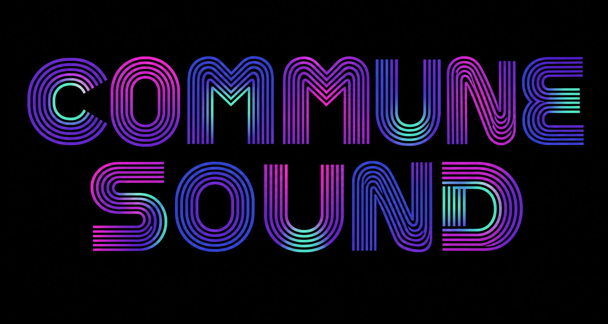
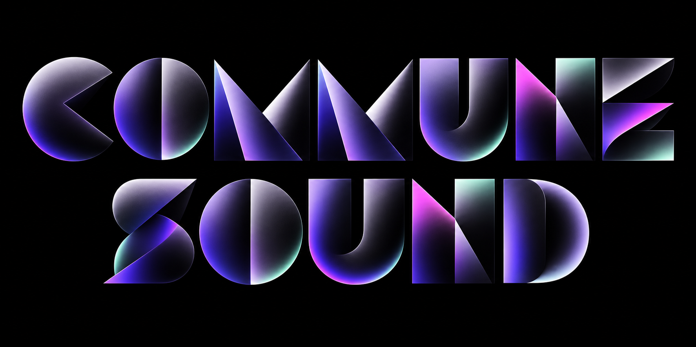
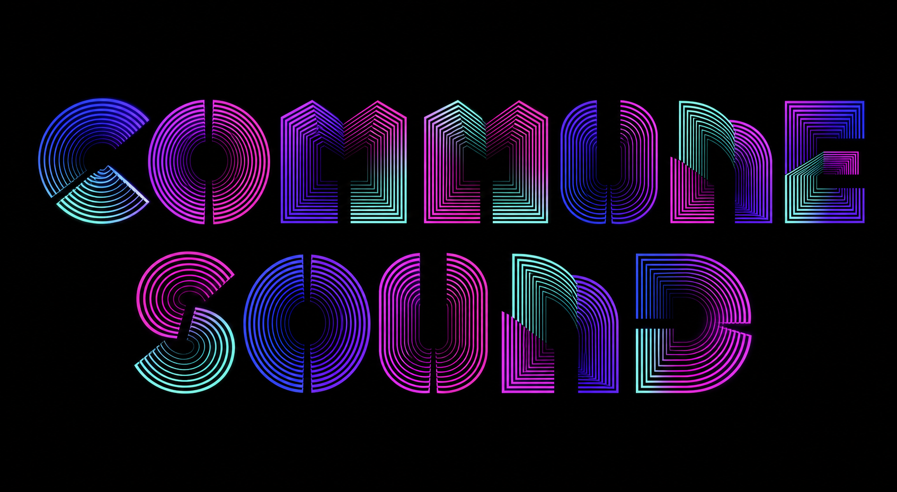
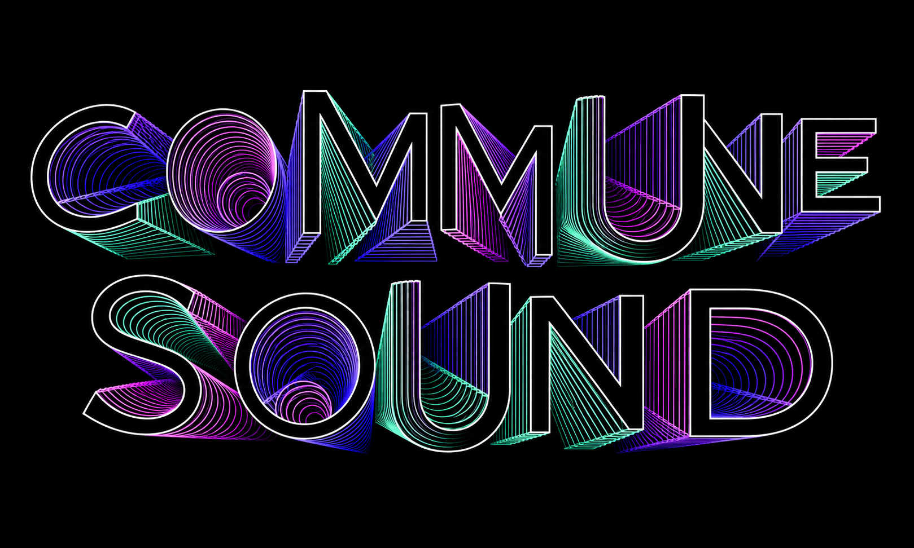
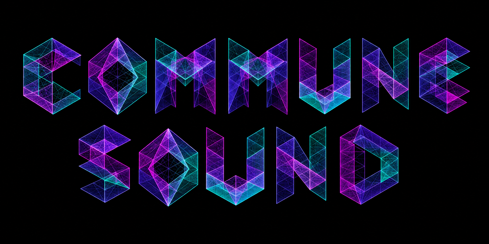
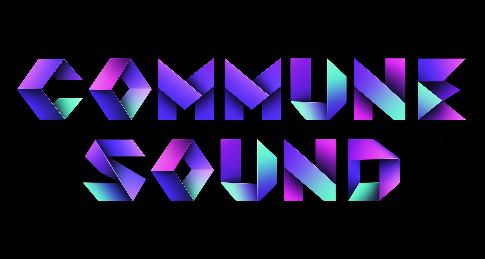
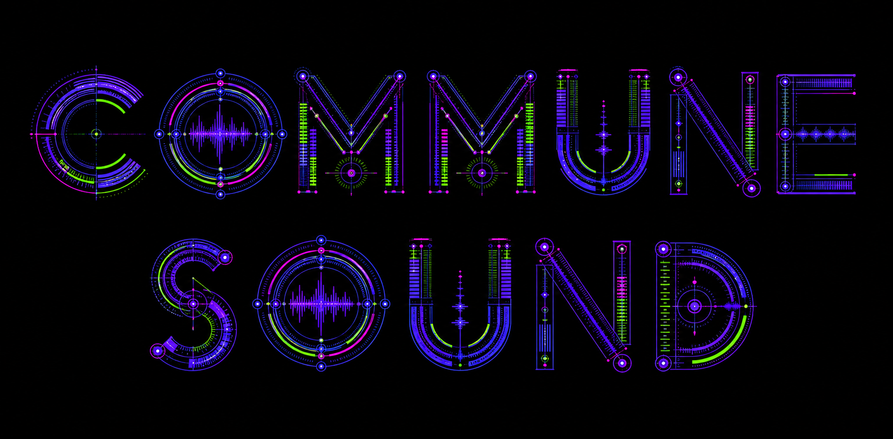
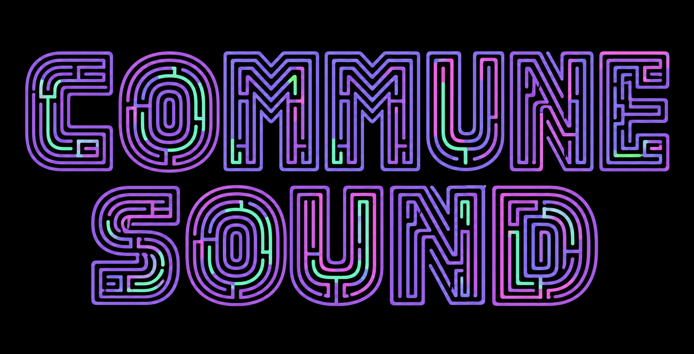
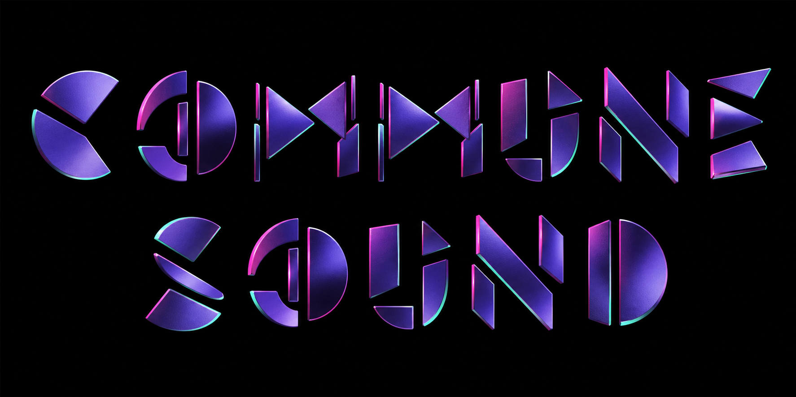
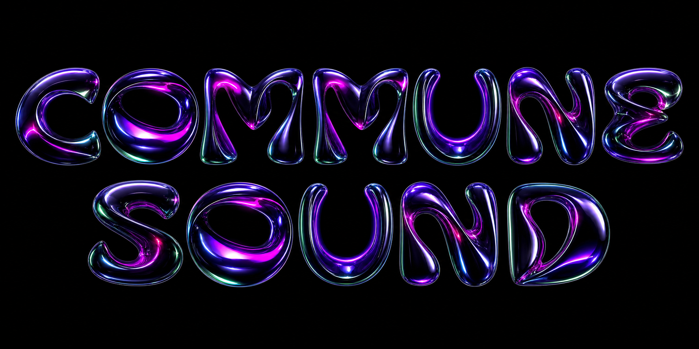

Ten new ways
to draw the name
Each option uses a different image-native construction language derived from the supplied typography references. The letters are conceived as ribbons, volumes, instruments, fragments and spatial objects, rather than a conventional font with an effect applied.

Ribbon Tunnels
Continuous nested paths turn every letter into an architectural route.

Gradient Monoliths
Bold optical volumes use positive and negative space as the alphabet.

Concentric Echoes
Split contours rotate and overlap around deep rhythmic counters.

Perspective Extrusion
Repeated outline planes turn the words into spatial tunnels and fans.

Isometric Lattice
Transparent triangular planes assemble into crystalline letter sculptures.

Folded Ribbons
Broad strips bend, overlap and reverse direction to create every glyph.

Technical Instruments
Gauges, signal rails and waveforms behave as a playable alphabet.

Maze Routes
Each letter becomes a continuous path with returns and open counters.

Kinetic Fragments
Detached forms align around invisible axes at the edge of assembly.

Liquid Chrome
Inflated metallic bodies turn the name into spectral letter sculpture.